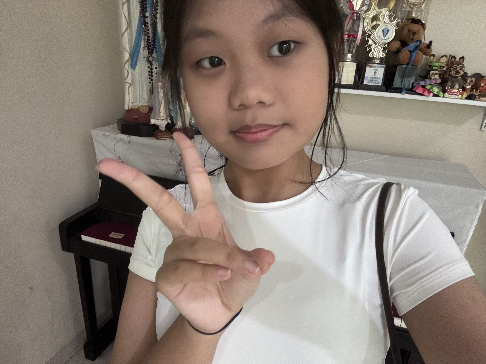
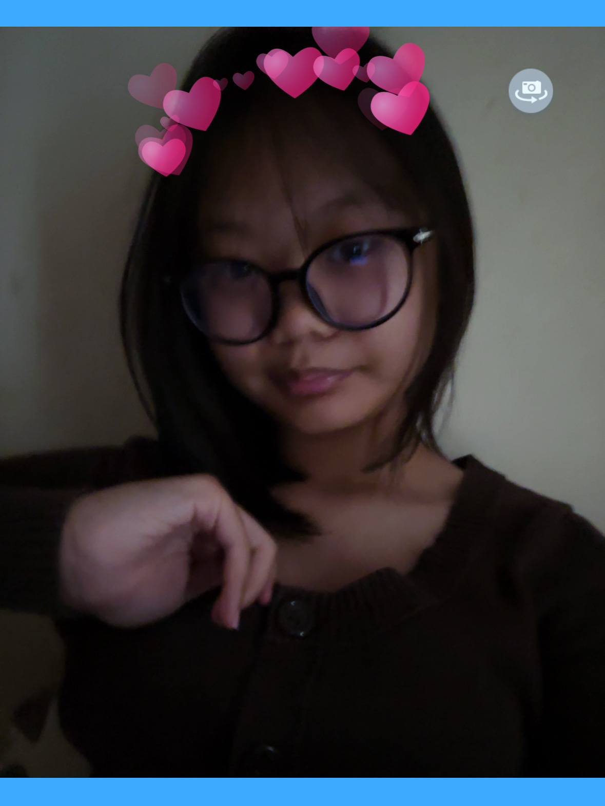

Aku seorang Murid SMP di Laurensia Suvarna Sutera
Aku berumur 14 tahun dan bercita-cita mengambil jurusan Sastra.
Aku memiliki banyak hobi, seperti menggambar, melukis, dan membaca buku.
Seni adalah bagian penting dalam kehidupan sehari-hariku karena aku
sangat berminat pada apapun yang berbau seni.
Aku juga berminat dalam hal literatur. Aku suka membaca buku-buku
novel dengan genre misteri dan non-fiksi. Buku favorit aku adalah
"1984" karya George Orwell. Sebagai murid, aku selalu berusaha untuk
melakukan yang terbaik dalam belajar. Pelajaran yang aku suka
adalah Matematika, Fisika, dan Biologi.

